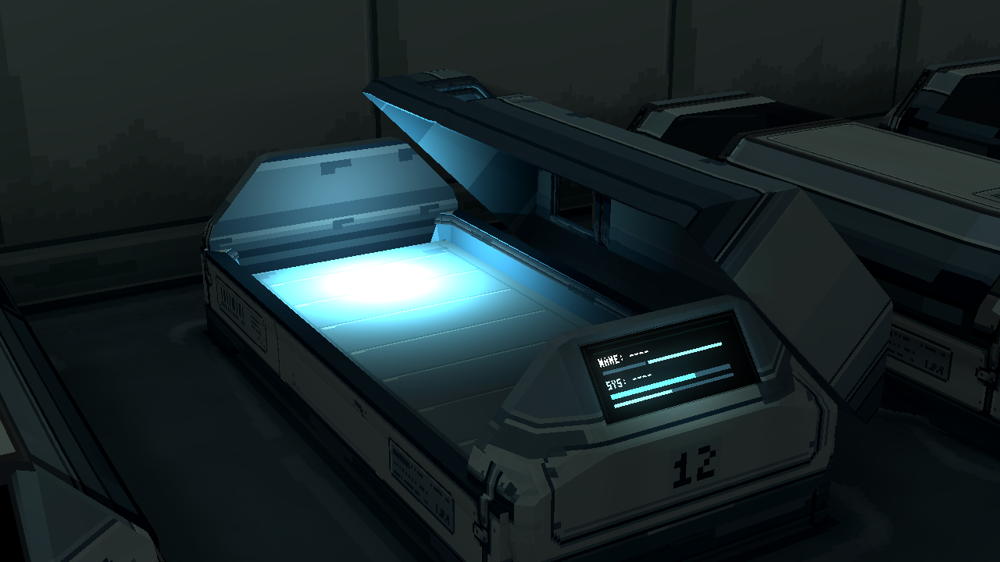
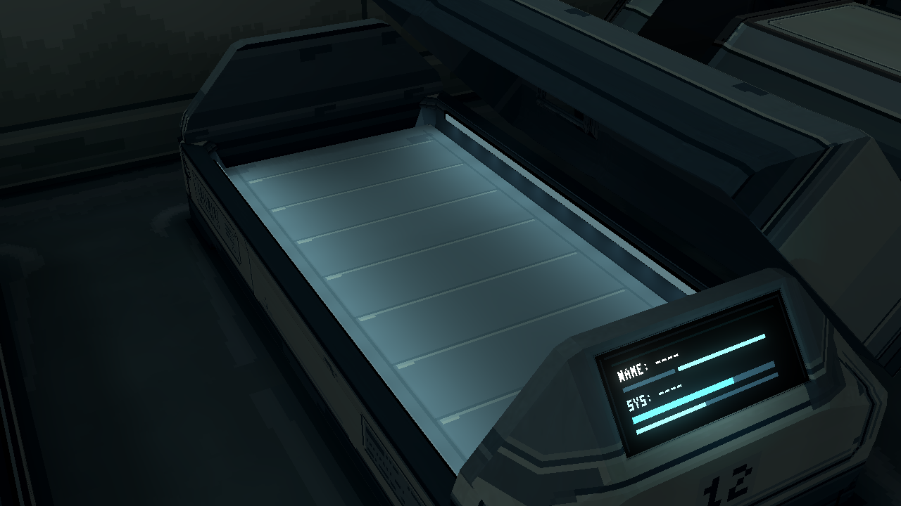
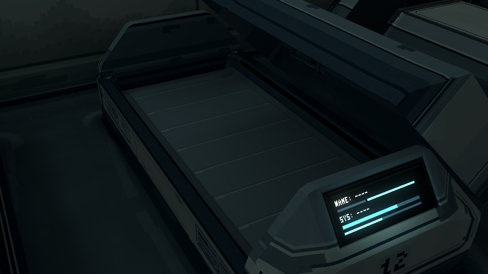
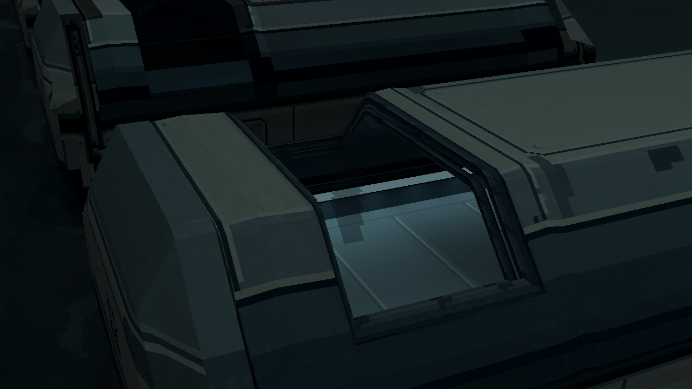
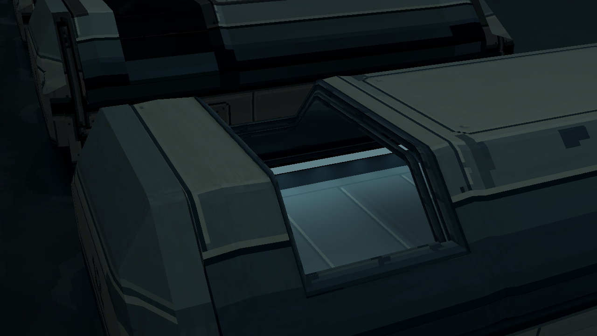
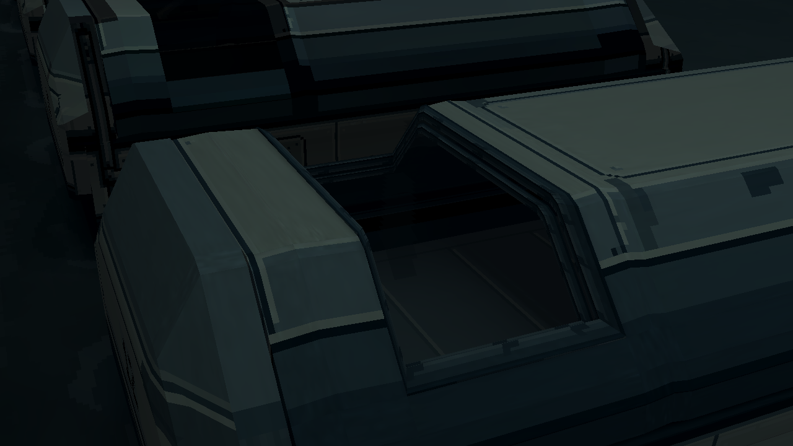
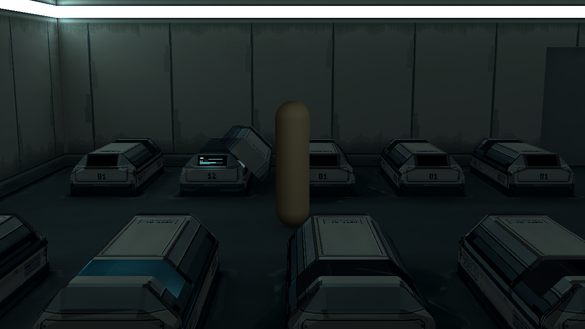
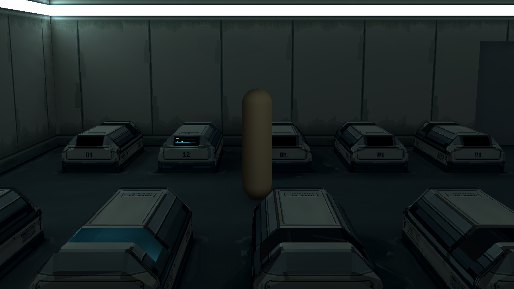

P12 · 内部两侧灯管
取消中央点光，改为舱口下方两条长边内嵌灯管。床面受光沿全长分布，保留分段与材料明暗；玻璃及房间其他照明保持。
组件与运行说明 · 实际检查记录
当前 · 相同机位开盖 / 闭合
床面 · 原点光与两侧灯管

旧v5 · 头部点光使床面蓝白过亮
新v7 · 灯管在两条长边，床面细节可读

当前床面近景 · 一侧因真实舱口／舱盖遮挡而不直接可见

只关闭两侧灯 · 保留原房间光照
透明头窗 · 条件独立

玻璃存在 · 可见内侧灯管、床面分段与反光

只隐藏玻璃 · 检查真实内部

关闭舱内灯 · 透明玻璃仍存在
只关闭像素反光
实际游戏镜头 · 相同旁移站位

打开

闭合
实际Godot截图1280×720，无提亮。只改P12，灯管为独立可编辑Godot组件，尚未合并Blender／GLB。沿用v5局部受光边界，没有新全室GI。